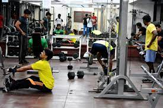
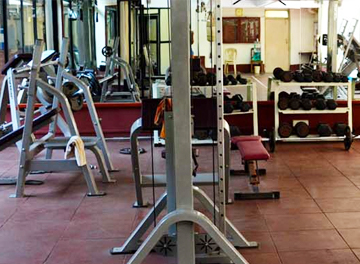
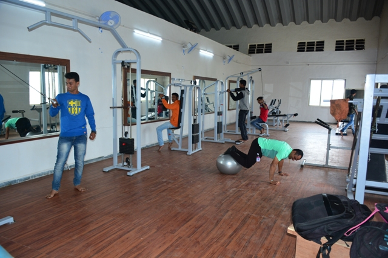

The college has a well equipped library located on the 2nd floor. The library contains books and periodicals pertaining to the courses of studies and also of general interest. Besides the Reference Section, Special facilities are available for the home issue of library books.
General RulesBook Bank: College has a Book Bank Scheme for needy students. Interested students may contact the Librarian for membership of Book Bank Scheme.
E-mail/Internet: We provide to our students and faculty an access to International Libraries and their information databases through internet facility. For details, contact the Librarian.
Scholar’s Card : To promote excellence, Scholar’s Cards are issued to the top 10 students from each class. These cards facilitate the students the students to borrow an additional book for home reading (2 books instead of 1)
Identity Card / Readers Ticket:Two stamp size photographs should be submitted by each student with full details like address with pin code, phone number, date of birth, etc.
Each and every student should see the Library Notice Board everyday.
A Committee, consisting of teachers and the physical instructors, manages activities of the Gymkhana. The previous year’s sports/games champion of the Degree College, if available, will be the secretary. In case of his non availability, another student whose all round performance during the previous year has been found satisfactory, will be nominated by the Gymkhana Committee as the Secretary. The Committee will regulate the Gymnasium timing and the students are required to strictly follow the schedule. We also promote our sports students at international level by giving special scholarship.
   The college provide facility for students and staffl.
The college has a licensed canteen approved by Food and Drug Administration Maharashtra state and food is supplied at a discounted rate.
Also special care is taken regarding hygiene. Variety of lunch and snacks and beverages are sold in the canteen.